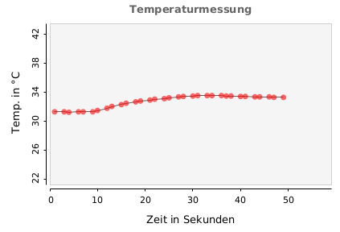

Auch zur Darstellung der Messwerte in einem Diagramm verwenden wir eine vorgefertigte Bibliothek.
Öffne das Menü Sketch.Library importieren.Manage Libraries
Erstelle einen neuen Sketch und importiere in der ersten Zeile die Bibliothek:
import grafica.*;
In der setup()-Methode kannst du mit wenigen Zeile ein einfaches Diagramm erzeugen.
import grafica.*;
GPlot plot;
void setup() {
size(500, 350);
background(0, 0, 0);
plot=new GPlot(this, 25, 25);
plot.setTitleText("Temperaturmessung");
plot.getXAxis().setAxisLabelText("Zeit in Sekunden");
plot.getYAxis().setAxisLabelText("Temp. in °C");
plot.setXLim(0, 100);
plot.setYLim(-30, 110);
plot.defaultDraw();
}
Das Objekt plot verweist auf das Diagramm, das wir zeichnen werden.
Mit dieser Zeile wird das plot-Objekt erzeugt (=initialisiert). Die Parameter haben folgende Bedeutung:
Hier legen wir die linke und rechte Grenze der x-Achse fest.
Abschließend wird das Diagramm gezeichnet:
In der draw()-Methode fügen wir jetzt einfache Messwerte hinzu und lassen sie grafisch darstellen:
int x=0;
void draw() {
while (x<100) {
x++;
plot.addPoint(x, x);
plot.defaultDraw();
}
}
